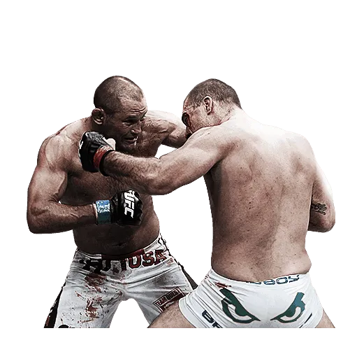

Las personas seguras de sí mismas se conocen a sí mismas y saben lo que quieren. Confían en su juicio y se sienten bien consigo mismos y con la situación que sea. Están en contacto con sus emociones sin dejar que las dominen. De esa manera, evitan que se vuelvan impulsivos.
La sinceridad nos permite expresarnos libres de todo fingimiento con los demas. Es lo que nos permite manifestarnos exteriormente como somos interiormente, en nuestra relación con los demás. Es la claridad y transparencia en lo que se hace, en lo que se piensa y en cómo se vive.
Al ser asertivo demuestras que te respetas a ti mismo, ya que estás dispuesto a defender tus intereses y a expresar lo que piensas y sientes. También demuestras que eres consciente de los derechos de los demás y estás dispuesto a resolver los conflictos.
-
Deporte

Para mi hacer deporte, sobre todo de contacto es algo muy importante en la vida ya que me ayuda a estar bien tanto animica como fisicamente.
-
Escuchar musica
Escuchar musica es algo fundamental en mi vida, tanto como para viajes largos como para mi dia a dia.